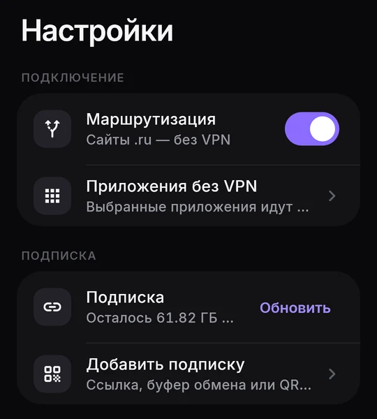
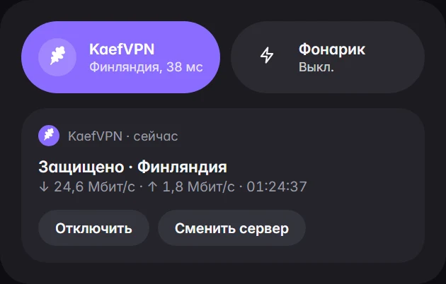
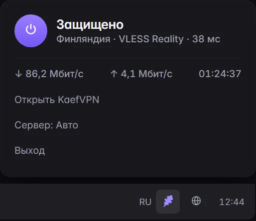

Одна кнопка.
Всё.
Своё приложение KaefVPN. Входишь через Telegram, жмёшь кнопку — дальше оно само выберет быстрый сервер, покажет пинг и скорость и переподключится, если что-то отвалится.
Бесплатно. Платишь только за подписку в боте.

Всё под рукой. Даже не открывая приложение.
Вход через Telegram
Вводишь свой ник — код приходит в бот. Никаких ссылок копировать не нужно. На телевизоре — вход по коду с телефона.
Режим «Авто»
Сам выбирает сервер с лучшим пингом. Если сервер перестал отвечать — переподключится без тебя.
Сайты .ru напрямую
Один переключатель — российские сайты открываются без VPN, остальное через него.
Приложения без VPN
Отметь приложения, которым VPN не нужен, — банки, госуслуги. Только Android.
Живой пинг и скорость
Сервер, пинг и скорость видно сразу на главном экране.



Серверы, скорость и цифры подписки на картинках — для примера. У тебя будет то, что пришло в твоей подписке.
Установка за минуту
Скачай APK
Для телефона или телевизора — в канале @KaefVPN. Стояла самая первая версия KaefVPN? Сначала удали её: подписка хранится в боте и не пропадёт.
Разреши установку
Android спросит разрешение на установку из этого источника — это нужно один раз.
Войди и нажми кнопку
«Войти через Telegram» или Настройки → Добавить подписку — из буфера, вручную или по QR. Потом кнопка на главном экране.
Распаковал и запустил
Распакуй архив
В любую папку и запусти kaefvpn.exe. Файлы рядом нужны — один exe не переноси.
Синее окно SmartScreen
Подробнее → Выполнить в любом случае. Так бывает с программами без платной цифровой подписи.
Режим TUN
По умолчанию через VPN идут браузеры и большинство программ. TUN пускает весь трафик компьютера — для него нужен запуск от администратора.
Скачивай только здесь
Приложение KaefVPN раздаём только на kaefvpn.ru и в канале @KaefVPN. APK из других мест не ставь — мы не знаем, что в него положили.
Про приложение
Приложение платное?
Нет, бесплатное. Платишь только за подписку в боте, как и раньше.
Можно остаться в другом клиенте?
Да. Ссылка подписки работает в любом клиенте, который умеет добавлять подписку по URL.
А iPhone?
Своего приложения под iPhone пока нет. Подойдут Happ, Streisand или V2Box из App Store — добавь подписку по ссылке из бота.
Что-то не работает
Открой Настройки → Логи → «Скопировать логи» и пришли в «Поддержку» в боте. Ссылку подписки и ключи приложение в логах прячет.